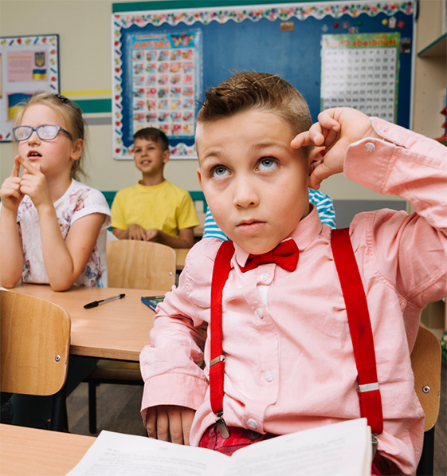

Подготовка к школе
Дошкольное образование — важный этап формирования характера и навыков ребенка. В нашем центре дети в возрасте до 7 лет получают все необходимое, чтобы пересечь новую черту своей жизни уверенно. Подготовительные курсы перед школой способствуют социализации, развитию мышления, знаний и навыков. Благодаря этому ребенок в школе будет чувствовать себя более уверенно и на одном уровне со сверстниками.
Преимущества для ребенка
- Наш детский центр подготовки к школе — хорошая возможность
ля родителей с помощью профессиональных педагогов подготовить ребенка к учебе.
Такая альтернатива детским садам имеет ряд плюсов:
- Вежливое обращение — с детьми работают опытные педагоги
и сотрудники, имеющие высшее образование с дошкольным направлением.
Они никогда не повышают голос и не демотивируют ученика;
- Комфортные условия — классы имеют свежий и безопасный ремонт,
а также укомплектованы всем необходимым для учебы;
- Интересная учебная программа — ее разрабатывают
педагоги на уровне международных стандартов, чтобы достичь максимальной
пользы от уроков и привить ребенку интерес к познанию языков, гуманитарных,
технических и точных наук;
- Работа с профессиональными педагогами — под каждое направление
подбирается свой учитель, который хорошо разбирается в сфере и может дать качественные знания;
- Общение со сверстниками — группы по 7 человек позволяют детям более
легко находить общий язык друг с другом. Это формирует интерес к учебе, ведь иметь друзей
в их возрасте — важно.
Подготовительная школа для детей — хорошая альтернатива классическим детским садам, где ваш ребенок получает возможность наверстать упущенное и сравняться со сверстниками. Особенно, если по какой-то причине он не посещал садик или плохо социализирован. Уже с самого начала пути ему будет предоставлена хорошая база знаний, которая окажется полезной уже с первых дней начала школьного семестра. А небольшие группы позволяют постепенно привыкнуть к коллективу без стрессовых ситуаций.
Как проходит обучение?
Вступительная программа начинается в летний период, где формируются группы по 7 человек в возрасте 4-5 или 5, 6, 7 лет. Чтобы определить уровень развития ребенка, наши педагоги предлагают пройти ученику ряд заданий. По их результатам он будет записан в подходящую группу, где учиться будет интересно удобно и полезно. Весь курс с детьми контактируют опытные педагоги, которые умеют работать с детьми, находя правильный подход даже в сложных ситуациях. Их знания и методики соответствуют современным стандартам и приближены к европейскому уровню. Благодаря этому наши курсы по подготовке к школе для детей и дошкольников дают хорошую основу для начала обучения в образовательном учреждении и мотивируют ученика продолжить учиться.
Как проходят занятия?
- Чтобы достичь максимальной результативности во время обучения детей, мы разработали комплексную программу. С ее помощью ребенок в интересном ключе научится:
- чтению;
- письму;
- разговорной речи;
- азам математики и языка;
- быть эмоционально стабильным и усидчивым.
Также наши курсы развивают творческие навыки, способствуют социализации и укреплению психологической готовности к началу обучения в школе. К 1 сентября ученики на фоне других детей оказываются более уверенными, спокойными и подкованными в знаниях. Новые обстоятельства и коллектив не приводят молодой организм в стресс, а наоборот пробуждают интерес к обучению.